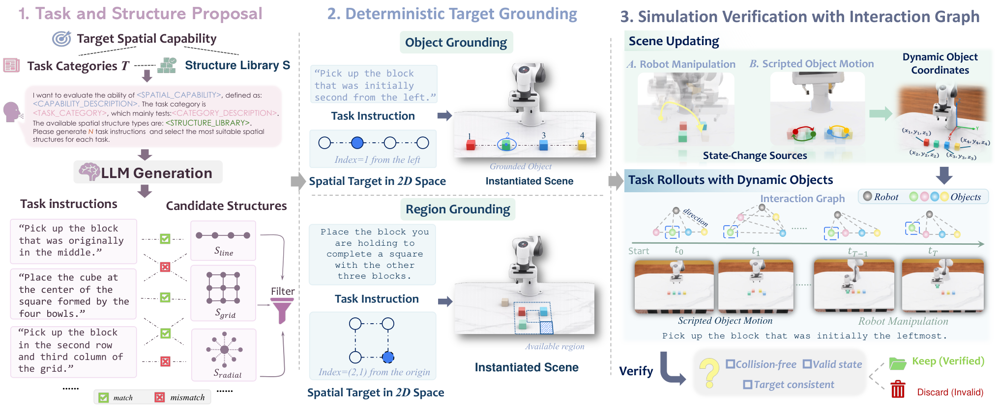

Paper Notes
Task and Necessary Distinctions
本文全名为 GeoMind: A Benchmark for Spatial Understanding in Robotic Manipulation。它研究机器人在 RGB 和自然语言下完成受约束操作，不是同名的其他空间推理论文。输入包括语言、桌面与腕部图像及机器人本体状态，输出为末端相对动作和夹爪控制。
六类任务分别为 Target Identification、Relational Grounding、Constraint Composition、Geometric Inference、Scene Updating、Identity Tracking。前四类从选目标、相对放置发展到组合约束和隐式几何关系；后两类引入场景变化。
关键区分是 Scene Updating 根据变化后的布局重新解析目标，Identity Tracking 必须保持变化前选中的那个对象。后者若选中当前恰好满足旧关系的另一个物体，仍然失败。颜色和形状相似的对象削弱了只靠外观捷径的可能。
Paper Notes
Reading the Construction Pipeline

Jinghe Wang et al. · Original figure, unmodified · CC BY 4.0 · Paper & Caption ↗
图 3 左侧将关系、拓扑和几何条件写成结构约束 S，再采样满足约束的对象布局 X。扰动应保留指定的顺序、栅格或相对关系，同时避免碰撞。空间方向按规范前视相机坐标解释，不能把机器人基坐标的左右直接当图像左右。
语言模型提出含角色、范围和更新规则的模板，经人工审核后固定。编码代理将规则翻译为可执行的目标解析器。模拟器维护对象与离散空间关系构成的交互图，排除布局不一致或任务不可执行的样本。
这一流程把出题与检验分开：常规代理不能看模拟器身份和坐标，评测器使用它们计算正确目标。记忆类任务在脚本运动前给出指令，运动结束后行动，允许代理使用此前观察及内部记忆。
Paper Notes
Variants and Evaluation Protocol
54 是变体数量：Base 20、Semantic 7、Visual 7、Execution 20。每个变体 48 个 episode，所以每个方法 Base 为 960 次，增强套件为 1632 次，总计 2592 次。Semantic augmentation 指语言输入变化，不是给网络加入语义监督。
实验使用 IsaacLab 和 Franka FR3，物理步频 480Hz、策略调用 24Hz，最多 1000 控制步。成功、工作空间越界或达到上限时结束。两个 RGB 视角均为 224×224。不同方法使用相同实例和随机种子，策略保持固定检查点，不在 GeoMind 上微调。
控制适配是解读结果的必要条件。附录中 π₀、π₀.₅ 禁用旋转并固定夹爪，其他方法的动作增益也不同；返回 action chunk 时仅执行第一个有效动作再查询。因此“共同接口”不代表每个原生策略都在同样合适的部署条件下运行。模块化 COPA/MOKA 则用 VLM 定位和脚本执行，与端到端 VLA 是跨范式比较。
Paper Notes
Metrics and What They Measure
Success Rate 按 episode 成败计数；每个变体样本数相同，总体等价于各变体等权，并非六个任务族等权。增强差值 Δ=SR_aug−SR_reference 必须用配对参考集合；不能把增强子集与完整 Base 均值相减。
Spatial Goal Error 是最终状态到目标的任务特定距离，缺失有效距离的 episode 从该指标中排除。Target Tracking Error 是整条轨迹末端执行器到目标位置的平均距离，并不是视觉追踪准确率；缺少动态目标轨迹时还会采用初始目标位置作为静态代理并作标记。
TTE 受起始距离、运动路径与轨迹长度影响。模型是否记住同一个对象，需要额外检查对象选择和身份对应，不能从一个较小的 TTE 直接推出。SGE、TTE 先在模型—任务族内求均值再跨模型汇总，不能把所有时间步直接混合。
SR = successful episodes / evaluated episodes ΔSR = SR_augmented − SR_matched-reference TTE_i = (1 / T_i) Σ_t ||p_end-effector(i,t) − p_target(i,t)||₂
Paper Notes
Results and Source Inconsistencies
Table 2 的 Base 均值显示 InternVLA-M1 为 26.4%，Spatial-Forcing 为 24.0%，OpenVLA 为 20.7%，Oracle 为 99.3%。Oracle 说明在正确目标与脚本控制条件下任务大体可解；普通代理与它的差距仍混合了定位、执行、部署适配等因素。
Table 3 的六种策略配对子集均值从 22.6% 降到语义增强后的 14.2%。这是 8.4 个百分点的下降，不能解释为使用语义特征会损害模型。这里改变的是指令，而不是训练中的语义表示。
原文 Q1 对目标名称和视觉提示干预报告 39.2%，把参考 11.3% 归给 π₀.₅；但 Table 2 中 π₀.₅ 是 12.5%，11.3% 对应 π₀。由于存在归属不一致，本笔记不据此计算该模型的确定增益。
Table 4 的 Identity Tracking 失败率为 85.00%，Scene Updating 为 68.89%。两者任务结构、执行难度与有效样本条件不同，论文也明确承认聚合 SGE/TTE 无法区分身份选错与执行不准。
| Method | Base SR ↑ | Evaluation Context |
|---|---|---|
| Oracle | 99.3% | 正确目标与脚本控制 |
| InternVLA-M1 | 26.4% | 冻结策略，共同评测实例 |
| Spatial-Forcing | 24.0% | 冻结策略，共同评测实例 |
| OpenVLA | 20.7% | 冻结策略，共同评测实例 |
| π₀.₅ | 12.5% | 旋转禁用、夹爪固定 |
Paper Notes
Scope and Reproducibility
评测限于模拟器中的单臂桌面操作，没有真实机器人验证。重遮挡、视角剧变、传感器噪声和复杂接触未被系统覆盖，受控结构也不能代表全部真实环境。实验没有测试针对 benchmark 微调后对未见结构的泛化。
截至本次检查，论文声明代码与数据尚未公开；其给出的 GitHub 仓库链接返回 404。不能据此推断永久不发布，但目前不能独立核查采样器、动作转换或表中差异。本文适合借鉴评测分解，不宜把所有排名当成模型固有能力的最终结论。
Paper Notes
Connections to Reconstruction and Memory
与 HIST3R 的联系在于，两篇都提示不要把一个总体指标等同于 memory 的质量。HIST3R 可以分别干预更新方向和强度，GeoMind 可以分别设计当前场景定位与历史身份保持任务。这两种分解有助于明确我们希望语义改善什么。
对 LingBot-Map，可以设计具有相同当前观测但不同历史身份线索的片段，分别检查几何、语义区域一致性与跨帧身份。这个建议是后续实验设计，不是本文已经验证的迁移结果。若预测只依赖当前帧，即使语义分割很好，也可能无法完成历史身份判断。
更完整的测试应把几何误差、目标检索正确率、身份错误、下游控制成功率分开记录。先验证语义写入前融合是否在相同缓存下改善后续几何，再考虑操作任务。GeoMind 没有三维重建精度对照，不能作为语义已经改善几何的证据。
Discussion
Reading Questions
Does a low TTE demonstrate good memory?
不能。它是末端执行器与目标的距离，既受控制与路径影响，也可能用静态位置代理，不直接检查身份保持。
Why distinguish scene updating from identity tracking?
当前关系可能重新决定目标，而身份任务要求保持变化前的对象。只有后者必然包含跨变化对应需求。
Can the oracle gap isolate reasoning errors?
不能。Oracle 提供正确目标和脚本执行；普通代理还有视觉定位、动作适配与控制误差。需要中间预测诊断。
References
- Paper · Version 1 ↗
- Submission History ↗
- Figure License · CC BY 4.0 ↗
- Announced Repository · Unavailable on Reading Date ↗
- Related Notes · HIST3R ↗
First submitted 2026-11-09. Read 2611.12175v1 on 13 November 2026. One original figure is reproduced under CC BY 4.0. Experimental results are reported by the authors and have not been independently reproduced.
Verified on 2026-11-13. Paper results refer to the linked versions. Repository references were checked on this date.